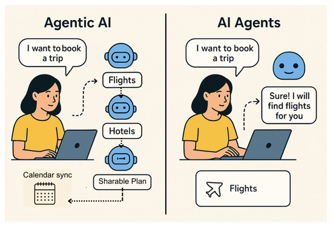

These are not concepts from a research lab. Agentic AI tools are available right now and already being used in professional settings. The question is which ones are mature enough and trustworthy enough for your specific workflow.

The common thread across all of these is human approval before anything goes out the door. Agentic AI prepares, drafts, and coordinates. You review, decide, and send. The system does the work, and you own the outcome.
Draft responses, categorize incoming messages by priority, and hold everything for your review before sending
Search across multiple databases, synthesize findings from different sources, and produce structured reports with citations
Pull data from CRM, financial systems, and prior correspondence to assemble client deliverables and review packages
Manage multi-party logistics across calendars, send confirmations, handle rescheduling, and prepare meeting agendas
Detect life events, renewal dates, or portfolio changes and automatically initiate the right follow-up sequence for each client